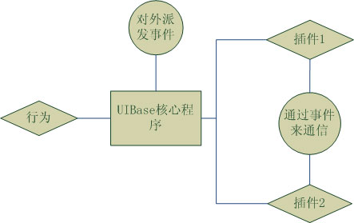

Tangram UI组件的设计原则是基于通用性作为前提的，这意味着一个设计出来的UI组件，是经过大量需求提练出来的，可以解决更多通用性问题的一个组件。这样的设计原则，决定了UI组件的设计实现应该具备有很高的抽象性。更多的功能被抽象，被不同的划分，就形成了一套UI的体系。所以，这里讲的UI体系，大体可以分为四个部分：UI组件的基础UIBase，事件机制，行为机制和插件机件，他们之间的关系可以通过下面的图来理解。

Tangram UI组件，它们功能各异，设计实现也不尽相同，然而归结到基础，他们的页面元素组织方式和渲染方式还是需要被统一的。UI组件的页面元素渲染方式采用拼接html字符串再渲染到容器的方式来生成，这样极好的避免了在程序中持有DOM节点，消除了内存泄露的隐患。由于UI组件都使用同样的原理来组织页面结构，由此UIBase就产生了。这里说的UIBase就是指baidu.ui.Base，他作为所有UI组件的基类，提供了一系列和页面元素的id，css名称生成，事件绑定和渲染等等相关的接口来组织和渲染页面元素，他是UI组件的基础核心，所有UI组件都继承于baidu.ui.Base。更详细内容可以查看Tangram-Component UIBase文档。
一个UI组件在工作过程中，会存在着各种各样的状态，在与用户的交互过程中也会存在着各种各样的状态，而对于一个二次开发者，他们很希望可以捕获这样的状态来插入自己的程序完成一些自己的操作。这样的一些状态类似于组件渲染完成时，组件被拖拽时等等。而对于UI组件来说，他可能会被扩展出若干个UI插件，对于这些插件的设计，他们既要求功能独立又要求低耦合性，那么UI插件之间如何建立数据通信关系呢？在这样的一些需求下，事件机制就应运而生了。事件机制的主要作用，就是提供一套标准的接口来注册事件（addEventListener），注销事件（removeEventListener）以及派发事件（dispatchEvent），他的实现原理就是一个简单的事件队列，将注册的事件侦听器加入到事件队列中，在遇到派发事件的时候，就根据派发的类型从事件队列中取出对应的事件侦听器进行独一执行。有了这些接口，在一个UI组件的程序中就可以任意的派发各种类型的事件，二次开发者就可以通过注册事件来完成对应的自定义操作了，而UI插件之间也可以通过事件机制来进行数据通信了。
用户在和页面交互的时候可能会产生各种各样不同的行为，例如拖拽一个窗口的拖拽行为，或是用户操鼠标，移入移出按下某个按钮时，按钮会对应的显示各种状态的行为等等，把这些各种各样的用户行为抽象出来，就形成了UI组件的行为机制，这些行为机制在Tangram UI中被独立的放在一个包中，即baidu.ui.behavior，那么更详细的内容和使用可以参考Tangram-Component behavior文档。
插件，相信很多开发者都听过，究其本质，就是功能的扩展。一个UI组件，无论他设计的多么完美，他也不可能满足各种日新月异的需求变化，一个UI组件，如果他是一个各种功能的完美集合体，首先他肯定免不了有一个庞大的体积，其次，各种功能都集合进来，用户却不一定都能使用上，那些使用不上的功能和占据的体积就会造成资源的浪费。以上这些设计理念，完全违背了Tangram的可定制化和轻量级的设计初衷，由此，UI组件需要有一套可订制化的插件机制，它可以在核心程序的基础扩展各种功能，提供给用户可选择可订制的解决方案。那么具体更多的插件机制的使用和原理请参Tangram-Component 插件文档。